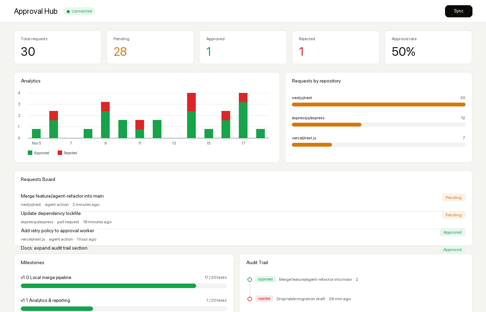

One-screen reviews
The request board, request details and audit trail are stacked on a single page. Read the full context of every pending action without switching between tools.
Approval Hub collects pending actions and pull requests from your repositories, gives you one calm screen to approve or reject, merges approved work locally, and keeps a complete audit trail. Nothing leaves your machine.

Runs on your machine · Read-only GitHub access · No account required
Everything you need to review agent and pull-request activity in one place.
The request board, request details and audit trail are stacked on a single page. Read the full context of every pending action without switching between tools.
Approving a request merges the branch into a mirror clone on your machine. Nothing is pushed to any remote, so reviewed work stays entirely under your control.
Track delivery with milestone progress bars, review decision activity over time and break requests down per repository, so trends are visible at a glance.
Four steps from raw repository activity to a fully audited decision.
Point Approval Hub at your local mirror clones. It reads pending agent actions and open pull requests with read-only GitHub access.
Every pending action appears on one board with its title, repository, age and full audit context, ready for a calm, single-screen review.
Approving performs a local git merge into the mirror clone on your machine. Rejecting closes the request without any remote side effects.
Each decision is recorded in a visible audit trail with timestamps, so your team can trace exactly what was approved, when and by whom.
One calm screen for statistics, analytics, the request board, milestones and the audit trail.